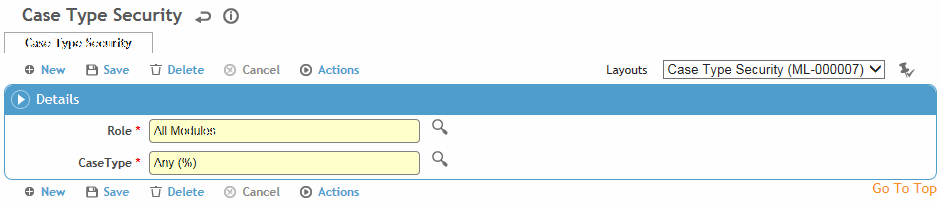

Similar to other types of security, Case Type security is accomplished by the use of security roles. If Case Type security is not required, no configuration is necessary.
In addition to providing security by controlling access to modules, actions, and sites, Cority provides Case Type Security for users who have purchased the Case Management module. This kind of security lets you control users' access to case records, documents, or report results that belong to defined Case Types such as long-term disability (LTD) or family medical leave absence (FMLA).
To provide this kind of security, Cority uses a Case Type role similar to functional and site roles. Like those other roles, you should configure Case Type roles before assigning users to them.
In the Administrator menu, click Case Type Security.
Click New.
Select the Role that you want to define case type security for. This may be a role that was only created for case type security purposes (i.e. not a functional role).
Select the Case Type.
Click Save. The case type security role is now available to be granted to users (see Setting Up Users).
